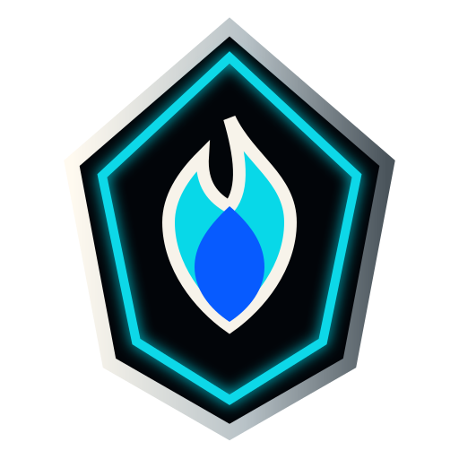

Game Hub
Diablo IV
Build notes, seasonal checklists, and farming references can live here in the same scan-first format.

Ready for the next guide
This section remains intentionally lightweight so future builds, seasonal notes, farming routes, and reference material can be added without fighting the site layout.